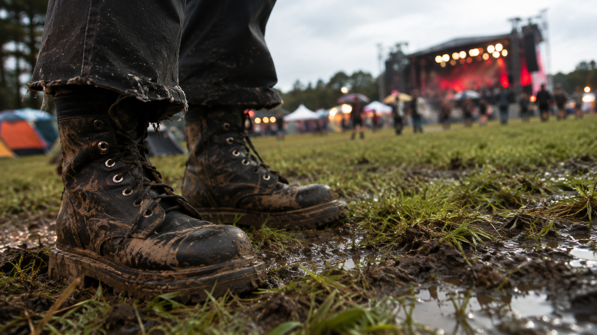

FESTIVALS & TIPPS · 5. NOVEMBER 2026
5 TIPPS FÜRS ERSTE ROCKFESTIVAL
Das erste Rockfestival steht an? Mit diesen fünf Tipps bist du bestens vorbereitet – von der richtigen Ausrüstung bis zur Suche nach deinen verschwundenen Freunden.
DAS WEGBIER
Für viele gehört das Wegbier zum Festivalritual einfach dazu. Gemeinsam mit Freunden unterwegs sein, Musik hören und sich auf den Abend freuen – so kommt schon vor dem ersten Gitarrenriff Festivalstimmung auf. Wer lieber alkoholfrei unterwegs ist, schnappt sich einfach sein Lieblingsgetränk.
DIE RICHTIGE KLEIDUNG
Stylisch aussehen ist cool, aber nach mehreren Stunden auf dem Festivalgelände wirst du vor allem eines schätzen: bequeme Schuhe! Besonders auf Wiesen kann es bei Regen schnell matschig werden. Pack deshalb wetterfeste Kleidung und eine Regenjacke ein. Deine Füsse werden es dir danken.

NICHT DIE ORIENTIERUNG VERLIEREN
Ein riesiges Festivalgelände, mehrere Bühnen und Tausende Menschen – da kann man schon mal den Überblick verlieren. Schau dir am besten gleich zu Beginn den Geländeplan an und merke dir wichtige Treffpunkte. So findest du dich auch später problemlos zurecht.
WO IST EIGENTLICH MEINE GRUPPE?
Du wolltest nur kurz etwas trinken holen und plötzlich sind alle verschwunden? Klassiker! Vereinbart deshalb am besten vorher einen festen Treffpunkt. Alternativ hilft vielleicht auch der zwei Meter grosse Kumpel, der aus jeder Menschenmenge herausragt. Oder ein auffälliger Ballon – vorausgesetzt, er überlebt den Abend.
ESSEN & TRINKEN NICHT VERGESSEN
Bei all der Musik, dem Tanzen und Feiern vergisst man schnell, etwas zu essen oder genügend Wasser zu trinken. Dabei braucht dein Körper Energie! Informiere dich vorab, ob du eigene Snacks mitbringen darfst. So sparst du vielleicht sogar etwas Geld und bleibst bis zum letzten Song fit.
READY TO ROCK? 🤘
Mit diesen fünf Tipps steht deinem ersten Rockfestival nichts mehr im Weg. Also schnapp dir deine Freunde, pack deine Sachen und geniesse die Musik!